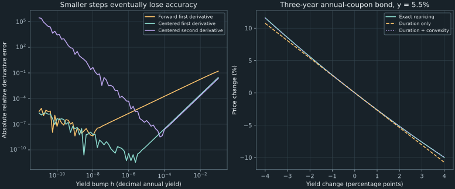

13. Bond calculus, duration, and convexity
A three-year bond paying 6, 6, and 106 is worth approximately 101.348967 at an annual yield of 5.5%. Raising the yield to 6.5% gives an exact repriced value of approximately 98.675762. A first-derivative estimate misses that value by about 0.049846; including the second derivative reduces the error to about 0.000781. The coefficients have financial names—duration and convexity—but their usefulness comes from a specified pricing function and a controlled approximation.
We derive finite differences, explain why shrinking a numerical bump eventually loses accuracy, and connect analytic bond derivatives to cash-flow timing. Then we reproduce the workshop, aggregate sensitivities under a common shock, distinguish clean from dirty prices, and examine a callable contract whose changing cash flows invalidate the fixed-payment convexity argument.
Source spine: recording 38, numerical differentiation, recording 37, bond sensitivities and settlement prices, and recording 42, worked examples. Their conceptual order places recording 38 before 37 despite the playlist positions. The portfolio, settlement, and callable examples below add explicit assumptions and calculations. All prices and shocks are declared teaching inputs.
13.1 Differentiate by combining nearby function values Recording 38, 6:21
Suppose a program evaluates a scalar function $f(x)$, but does not return its derivative. Choose $h>0$ with both perturbed inputs inside the function's domain. The forward, backward, and centered first-difference formulas are
\[ D_+f=\frac{f(x+h)-f(x)}h,\quad D_-f=\frac{f(x)-f(x-h)}h,\quad D_0f=\frac{f(x+h)-f(x-h)}{2h}.\tag{13.1} \]A centered second difference instead estimates the second derivative:
\[ D_2f=\frac{f(x+h)-2f(x)+f(x-h)}{h^2}.\tag{13.2} \]The lower argument in (13.2) is $x-h$. Repeating $x+h$ there would not give the cancellation needed for a second derivative. The complete program evaluates the three points once and reuses them across the four stencils. It checks that the points remain distinguishable in floating arithmetic.
Symmetry cancels particular Taylor terms
Assume $f$ has six continuous derivatives on a neighborhood of $x$ and restrict $h$ to a closed smaller neighborhood. Taylor expansion with bounded remainder gives
\[ f(x\pm h)=f(x)\pm hf'(x)+\frac{h^2}{2}f''(x) \pm\frac{h^3}{6}f'''(x)+\frac{h^4}{24}f^{(4)}(x) \pm\frac{h^5}{120}f^{(5)}(x)+O(h^6).\tag{13.3} \]Subtract $f(x)$ and divide by $h$ for the forward expression. Reverse the lower difference for the backward expression. Their expansions begin
\[ D_+f=f'+\frac h2f''+\frac{h^2}{6}f'''+O(h^3),\qquad D_-f=f'-\frac h2f''+\frac{h^2}{6}f'''+O(h^3).\tag{13.4} \]Subtract the lower expansion from the upper one and divide by $2h$. All even powers in the numerator cancel. Add them and subtract $2f(x)$ for the second difference; odd powers cancel instead. Thus
\[ D_0f=f'+\frac{h^2}{6}f'''+O(h^4),\qquad D_2f=f''+\frac{h^2}{12}f^{(4)}+O(h^4).\tag{13.5} \]The leading truncation error is generally first order in $h$ for one-sided first derivatives, and second order for the two centered formulas. The stated smoothness is sufficient for these displayed remainders; weaker assumptions can prove less detailed consistency results. If a leading derivative coefficient vanishes, an observed convergence ratio can improve or become uninformative. These formulas assume local smoothness, which an option exercise boundary or payoff kink may violate.
The quartic workshop shows the cancellation exactly
Recording 42 uses $f(x)=x^4$ at $x=1.5$. Its exact first, second, and third derivatives there are 13.5, 27, and 36. The values at $1.3,1.4,1.5,1.6,1.7$ are respectively $2.8561,3.8416,5.0625,6.5536,8.3521$. These make the following differences reproducible with a calculator.
| Step | $D_+f$ | $D_-f$ | $D_0f$ | $D_2f$ |
|---|---|---|---|---|
| 0.2 | 16.448 | 11.032 | 13.74 | 27.08 |
| 0.1 | 14.911 | 12.209 | 13.56 | 27.02 |
For this polynomial, the exact finite-step identities are $D_+f=13.5+13.5h+6h^2+h^3$, $D_-f=13.5-13.5h+6h^2-h^3$, $D_0f=13.5+6h^2$, and $D_2f=27+2h^2$. At $h=0.2$, the forward error is 2.948 rather than just its leading estimate 2.7. Halving $h$ reduces that error to 1.411, approximately but not exactly a factor of two. The centered errors 0.24 and 0.08 become 0.06 and 0.02, exactly one-quarter in exact arithmetic, because their quartic expansions terminate with those terms. Floating evaluation adds small rounding differences.
13.2 Balance truncation against evaluation error Recording 38, 15:43
The Taylor argument concerns exact function values. A numerical pricer instead returns $\widehat f(t)=f(t)+e_t$. Suppose the absolute evaluation error at each required point is bounded by $\eta$. In a forward difference, the added error is $(e_{x+h}-e_x)/h$, whose magnitude is at most $2\eta/h$. In a centered first difference it is at most $\eta/h$. For the second difference, the coefficients $1,-2,1$ give at most $4\eta/h^2$. Smaller $h$ amplifies evaluation error, especially for curvature.
Combining these estimates with the leading truncation terms suggests models of the form
\[ E_+(h)\lesssim Ah+\frac Bh,\qquad E_0(h)\lesssim Ah^2+\frac Bh,\qquad E_2(h)\lesssim Ah^2+\frac B{h^2}.\tag{13.6} \]Here $A$ comes from a relevant higher-derivative bound, while $B$ includes the evaluation-error scale and stencil coefficients. The constants and units differ across these three expressions. Differentiating these idealized positive bounds gives candidate balancing steps $\sqrt{B/A}$, $(B/(2A))^{1/3}$, and $(B/A)^{1/4}$, respectively, when $A,B>0$. This explains the familiar square-root, cube-root, and fourth-root scale dependence. It does not determine one universal decimal bump for every financial problem.
If a function has characteristic input scale $L$ and value scale $F$, and its evaluation errors are roughly $\epsilon F$, dimensional scaling yields candidate steps of orders $L\epsilon^{1/2}$ for a one-sided first derivative, $L\epsilon^{1/3}$ for a centered first derivative, and $L\epsilon^{1/4}$ for a centered second derivative. These estimates presume a smooth function with ordinary nonvanishing derivative scales. They can fail when evaluations contain simulation noise, iterative-solver error, cancellation, branch switches, or unusually small higher derivatives.
Machine precision is relative spacing, not a minimum positive bump
Binary64 arithmetic has relative spacing near one of about $2.22\times10^{-16}$. That does not mean every smaller positive $h$ underflows to zero. The issue may instead be that the rounded sum $x+h$ equals $x$, or that two evaluated function values become equal after rounding. At $x=1$, for example, adding $10^{-20}$ does not produce a distinct binary64 number. The input step can remain a positive representable number while its effect is lost in the addition.
Even when the inputs differ, subtracting nearby approximate values can leave few reliable digits in the difference. For a fixed smooth bond pricer, sweep several bump sizes and compare with its analytic derivatives. A decreasing-error region supports the expected truncation behavior; eventual irregular growth shows that further shrinking the bump no longer improves this computation. A sampled minimum is implementation dependent. It is not an interval error certificate or a transferable optimum for another pricer.
Finance adds a convenient reporting scale: one basis point of yield is $10^{-4}$, equal to 0.01 percentage point. A bump of $10^{-4}$ is often interpretable, but interpretability alone does not prove its derivative accuracy. For noisy pricing, compare the price change caused by the bump with the uncertainty of the evaluations. Reducing an inner pricing error, using correlated simulation draws for paired scenarios, or choosing a larger bump may matter more than changing the finite-difference stencil.
x, h = 1.0, 1e-20
assert h > 0
assert x + h == x
def centered(function, x, h):
if h <= 0 or not x - h < x < x + h:
raise ValueError("A positive distinguishable step is required")
return (function(x + h) - function(x - h)) / (2 * h)
assert centered(lambda t: 3*t + 2, 1.0, .25) == 3.0
This miniature demonstrates the step check, with a finite smooth callback and in-domain inputs as preconditions. The complete companion additionally validates finite scalar evaluations, rejects Boolean numeric inputs, and distinguishes arithmetic failures. A successful finite difference still cannot certify that the unknown mathematical function is differentiable at the requested point.
13.3 Derive duration from fixed cash flows Recording 37, 1:41
Consider fixed payments $c_k\geq0$ at dates $t_k=k/m$, with at least one positive payment, and nominal annual yield $y>-m$ compounded $m$ times per year. Set $b=1+y/m>0$. The full price and its first two derivatives with respect to this particular yield coordinate are
\[ P(y)=\sum_{k=1}^n c_kb^{-k},\qquad P'(y)=-\sum_{k=1}^n\frac{k}{m}c_kb^{-k-1},\qquad P''(y)=\sum_{k=1}^n\frac{k(k+1)}{m^2}c_kb^{-k-2}.\tag{13.7} \]These follow by differentiating each finite sum term and using $db/dy=1/m$. Every positive cash flow contributes a negative term to $P'$ and a positive term to $P''$. Hence price decreases strictly and is strictly convex throughout $y>-m$. The fixed-payment and nonnegative-payment assumptions do work here. They should not be silently transferred to signed trading portfolios or cash flows that change with interest rates.
Keep the sign and the yield unit explicit
The signed price sensitivity is $P'(y)$. Define the positive dollar-duration measure here as $-P'(y)$, and the first-order price value of one basis point as $\mathrm{DV01}=-P'(y)\,10^{-4}$. Currency and notional determine the price unit; the word “dollar” does not require a U.S. dollar denomination. Conventions for scaling a quoted duration amount vary, so report the formula and notional rather than the name alone.
If $P'=-800$ and yield rises by one percentage point, $\Delta y=0.01$, the linear price change is $-800(0.01)=-8$. It is not $-800$. A one-basis-point increase gives approximately $-0.08$. The lecture's signed-slope terminology and spoken “one percent” example require this explicit conversion.
The modified duration is the positive normalized sensitivity
\[ D_{\mathrm{mod}}=-\frac{P'(y)}{P(y)},\qquad \frac{\Delta P}{P}\approx-D_{\mathrm{mod}}\Delta y.\tag{13.8} \]Normalization removes the currency/notional scale, not the yield-coordinate dependence. With annual rates, duration has the corresponding time interpretation; it is not automatically a dimensionless elasticity. The price elasticity with respect to a nonzero yield is $yP'/P=-yD_{\mathrm{mod}}$. For example, $D_{\mathrm{mod}}=6.5$ predicts a relative price change near $-0.065$, or −6.5%, for an increase of 0.01 in yield.
Macaulay duration is a present-value-weighted time
Define $w_k=c_kb^{-k}/P$. The nonnegative weights sum to one. Their weighted average payment time is the Macaulay duration,
\[ D_{\mathrm{Mac}}=\sum_{k=1}^n\frac{k}{m}w_k. \quad\text{Then}\quad D_{\mathrm{mod}}=\frac{D_{\mathrm{Mac}}}{1+y/m}.\tag{13.9} \]To prove the identity, factor $1/b$ out of $-P'/P$ in (13.7). The remaining sum is exactly $\sum(k/m)w_k$. As a weighted average, $D_{\mathrm{Mac}}$ lies between the earliest and latest positive-payment times. A zero-coupon bond pays only at maturity $T$ and therefore has $D_{\mathrm{Mac}}=T$. Positive earlier coupons make it strictly below $T$ when the final payment is positive. Modified duration can differ from either number because its denominator depends on the chosen compounding and yield.
For comparable zero-coupon bonds at the same $y$ and $m$, modified duration is $T/(1+y/m)$ and increases with maturity. A universal ranking of arbitrary coupon bonds solely by maturity would require more assumptions: coupon size, yield level, amortization, embedded options, and the shock definition can change sensitivity. Duration summarizes how the specified price responds; it is not a synonym for the final payment date.
The five-year source fixture
The bond previously fitted to full price 98.40 has nine payments of 3.5 and a final payment of 103.5, with $m=2$. At nominal annual yield approximately 0.073885494486, direct differentiation gives $P'\approx-407.775142651$, $D_{\mathrm{Mac}}\approx4.297149153$, and $D_{\mathrm{mod}}\approx4.144056328$. Its DV01 is approximately 0.040777514 per face 100. Dividing its Macaulay duration by $1+y/2$ reproduces its modified duration. Using $1+y$ would accidentally apply the annual-compounding relation to a semiannual quote.
These definitions align with the fixed-cash-flow distinction in the Bond Market Association standard formulas, printed SF-49–SF-50. That reference expresses yields in percentage units and specifies semiannual conventions for its securities. Equations (13.7)–(13.9) use decimal nominal yields and explicitly expose $m$; conversions must precede numerical comparisons.
13.4 Use convexity to improve a specified yield-shock estimate Recording 37, 8:51 Recording 42, 12:19
Define the fixed-cash-flow convexity measure $\mathcal C=P''/P$. Taylor's theorem at $y$ gives, for a small additive change $d$ in this same nominal yield coordinate,
\[ \frac{P(y+d)-P(y)}{P(y)} =-D_{\mathrm{mod}}d+\frac12\mathcal C d^2+\frac{R_3}{P(y)}. \tag{13.10} \]If $P$ has a continuous third derivative on the segment between $y$ and $y+d$, then $|R_3|\leq M_3|d|^3/6$, where $M_3$ bounds $|P'''|$ on that segment. Thus convexity supplies a second-order correction, not an exact finite-shock price. Normalized convexity has the reciprocal-square yield units corresponding to the chosen annual-rate coordinate.
For these fixed positive cash flows, convexity also has a global consequence inside the yield domain: the price curve lies above each tangent. One proof integrates the increasing derivative: for $d>0$, $P(y+d)-P(y)=\int_y^{y+d}P'(u)\,du\geq dP'(y)$, and the reverse-direction integral gives the same tangent inequality for negative $d$. Convexity at the midpoint implies $P(y-d)+P(y+d)\geq2P(y)$. Since price decreases, the gain from a downward yield move is at least the loss from an equally sized upward move, provided both yields remain admissible.
The three-year annual-coupon workshop
Use face 100, annual coupon rate 6%, annual payments, three years to maturity, and annual effective yield $y=0.055$. The payments are $(6,6,106)$ at years $(1,2,3)$, so
\[ P=\frac6{1.055}+\frac6{1.055^2}+\frac{106}{1.055^3} \approx5.687203791+5.390714494+90.271048403 =101.348966689.\tag{13.11} \]The weighted-time numerator is $1(5.687203791)+2(5.390714494)+3(90.271048403)$. Dividing by price gives $D_{\mathrm{Mac}}\approx2.834580237$ years. Because this bond compounds annually, dividing by 1.055 gives $D_{\mathrm{mod}}\approx2.686805912$. Differentiating its finite cash-flow sum gives $P'\approx-272.305002835$, $P''\approx1012.530064815$, and $\mathcal C\approx9.990531703$.
A one-basis-point centered check evaluates prices at yields 0.0549, 0.0550, and 0.0551. The results are approximately 101.376202253, 101.348966689, and 101.321741251. Applying (13.1)–(13.2) and normalizing gives modified duration approximately 2.686805990 and convexity approximately 9.990531955. These agree closely with the analytic values, without implying that one bump guarantees ten accurate digits.
For the workshop shock from 5.5% to 6.5%, $d=0.01$. Equation (13.10), without the remainder, gives
\[ -2.686805912(0.01)+\tfrac12(9.990531703)(0.01)^2 \approx-0.026368532531=-2.6368532531\%.\tag{13.12} \]The fraction and the percent differ by a factor of 100. Using $d=0.1$ would describe a ten-percentage-point yield shock, not this problem. The corrected numerical comparison is:
| Method | Price at 6.5% | Absolute price error |
|---|---|---|
| Exact cash-flow repricing | 98.675762245 | 0 |
| Duration only | 98.625916661 | 0.049845584 |
| Duration and convexity | 98.676543164 | 0.000780919 |
The second-order estimate's error is about 64 times smaller in this case. That improvement is measured for this particular shock, not a universal factor. For an upward move, the third derivative of each positive discounted payment is negative, so the quadratic estimate lies above the exact new price. Bounding its magnitude over $[0.055,0.065]$ by the value at the lower endpoint supplies an explicit remainder check in the companion.

The five-year semiannual fixture has convexity approximately 20.838511891, agreeing with the source's rounded 20.84. Its larger value is attached to its own cash flows, yield, and compounding convention. For a large shock, exact repricing remains available for these simple bonds and avoids relying on a truncated Taylor expansion. Sensitivity coefficients are useful summaries when comparing or aggregating exposures, rather than a reason to discard an inexpensive exact price calculation.
13.5 Aggregate only sensitivities to the same shock Recording 37, 10:33
Let a portfolio hold $q_i$ units of bond $i$, priced $P_i(y_i)$, and assume the scenario adds the same decimal yield shift $z$ to every $y_i$. Keep quantities and cash flows fixed. Its value is $V(z)=\sum_iq_iP_i(y_i+z)$. For nonzero initial value $V(0)$, differentiating this finite sum gives
\[ D_V=-\frac{V'(0)}{V(0)}=\sum_iw_iD_i,\qquad \mathcal C_V=\frac{V''(0)}{V(0)}=\sum_iw_i\mathcal C_i, \quad w_i=\frac{q_iP_i(y_i)}{V(0)}.\tag{13.13} \]These are market-value weights, not face-value or quantity weights. A short position can give a negative weight. If net value is zero, normalized portfolio duration is undefined even though the signed dollar sensitivity $V'(0)$ remains meaningful. Near-zero net value can make a normalized number very large through cancellation. Aggregating unnormalized price changes is often the clearer starting point.
For example, combine two units of a one-year annual-payment bond with final payment 104 and yield 4%, with one unit of the three-year workshop bond at 5.5%. The short bond costs 100 per unit. Total value is approximately 301.348966689 and the value weights are approximately 0.663682382 and 0.336317618. The short bond has modified duration $1/1.04$; the workshop bond has 2.686805912. Their weighted portfolio duration is approximately 1.541776301 and convexity approximately 4.587215165. The direct sum of their first and second dollar derivatives gives the same numbers.
A curve twist is a different mathematical perturbation
A common shift in individual YTMs is one scenario. It does not describe every change in the term structure. With independent continuously compounded zero rates $z_j$ at payment dates $t_j$, a fixed-cash-flow price is $P=\sum_jc_je^{-t_jz_j}$. Its dated partial sensitivities are
\[ \frac{\partial P}{\partial z_j}=-t_jc_je^{-t_jz_j},\qquad \Delta P\approx\sum_j\frac{\partial P}{\partial z_j}\Delta z_j. \tag{13.14} \]Take payments 6 at year 1 and 106 at year 3, with separate continuous zero rates 4% and 6%. The two partials are approximately $-5.764736635$ and $-265.615927229$. A parallel increase of 0.01 gives a linear price change near −2.713806639. A twist that raises the one-year rate by 0.01 and lowers the three-year rate by 0.01 instead gives approximately +2.598511906. A scalar summary designed for the first direction cannot distinguish the second direction without the dated exposures.
In a curve represented by interpolated knots, changing a knot may affect several cash-flow dates. Its sensitivity then follows by differentiating through that interpolation or by repricing a defined knot bump. Such key-rate scenarios must specify which knots move and how the curve between them changes. Mixing a nominal-YTM derivative with a continuous-zero-rate bump without a coordinate conversion would combine different questions, even if both output columns are labeled “duration.”
13.6 Separate settlement accounting from yield sensitivity Recording 37, 17:55
The dirty price, or full price, is the settlement value of the remaining entitled cash flows. A conventional clean price subtracts accrued interest:
\[ P_{\mathrm{dirty}}=P_{\mathrm{clean}}+\mathrm{AI}.\tag{13.15} \]For a regular coupon amount $c$ and an elapsed accrual fraction $\alpha$ of its coupon period, the simple accrued-interest convention is $\mathrm{AI}=c\alpha$. The day-count rule determines $\alpha$; actual-day, 30/360, irregular-period, and entitlement conventions should not be replaced with an unstated calendar approximation. TreasuryDirect's purchase explanation gives a concrete case in which accrued interest is part of the amount paid and is received in the next regular coupon. That accounting does not make it a separate risk-free trading profit.
A declared fractional-period example
Continue the five-year semiannual bond at its fitted nominal annual yield, but place settlement five-sixths of the way through the next coupon period. Declare a simplified regular-period convention with $\alpha=5/6$, leaving $f=1/6$ of a half-year until the next payment. There are still ten remaining payments: nine of 3.5 and a final 103.5. The remaining maturity is now $(9+1/6)/2$ years. Its full price under fractional-period compound discounting is
\[ P_{\mathrm{dirty}}(y)=\sum_{k=1}^{10}c_k(1+y/2)^{-(k-1+1/6)}. \tag{13.16} \]The companion obtains dirty price approximately 101.420110731. Accrued interest is $3.5(5/6)=2.916666667$, so clean price is approximately 98.503444064. These are new settlement-scenario prices at the retained yield, not a claim that the original coupon-date full quote remains 98.40 after five months. To invert a clean quote at this settlement date, add the appropriate accrued interest before solving the full cash-flow equation.
Equal dollar derivatives do not imply equal normalized numbers
At a fixed settlement date under this convention, accrued interest does not depend on yield. Therefore $P'_{\mathrm{clean}}=P'_{\mathrm{dirty}}$ and their second derivatives also agree. But dividing the common derivative by different prices changes the normalized sensitivity. In this example, $-P'_{\mathrm{dirty}}/P_{\mathrm{dirty}}\approx3.742234079$, whereas $-P'_{\mathrm{clean}}/P_{\mathrm{clean}}\approx3.853040858$. The clean-price translation does not alter the dollar price change caused by a yield move; the denominator must still be declared.
Time evolution is another derivative. At a constant yield and with no payment between two dates, the full price grows by compound carry under this model; it need not rise linearly. A coupon payment reduces full value by the paid amount when all else is held fixed. Subtracting a conventionally accruing coupon amount removes much of that mechanical sawtooth from quoted clean prices. It does not force clean prices to be smooth through market repricing, credit events, or changes in yields. Keep the observation date fixed when testing an interest-rate derivative so that accrual and time passage do not enter the bump accidentally.
13.7 Reprice changing cash flows in effective sensitivities Recording 37, 15:30
A callable bond or a mortgage can have interest-sensitive cash flows. A rate change can alter an issuer's exercise choice or a borrower's prepayment behavior. Holding the original payment vector fixed then answers a different question from repricing the full contract. An effective duration-style scenario measure commonly uses $[V_- - V_+]/(2hV_0)$, where $V_-$ and $V_+$ are prices under specified downward and upward curve scenarios. Effective convexity uses $(V_- -2V_0+V_+)/(h^2V_0)$. The bump definition and the model's cash-flow response are part of these quantities.
The finite-difference stencil can look identical to a fixed-cash-flow calculation. The difference lies in what is reevaluated inside the pricing function. The standard formulas, printed SF-50, distinguish interest-sensitive effective measures from fixed-cash-flow measures. The latter's positive convexity proof does not apply automatically after exercise behavior changes.
A minimal callable example with a visible kink
Consider a contract promising 110 at year 2, with an issuer option to redeem it for 100 at year 1 instead. There are no other payments. Use a flat deterministic continuously compounded rate $r$ at every date in each scenario. At year 1, the continuation value is $110e^{-r}$. An issuer minimizing its liability chooses the smaller of that value and the redemption amount 100. Its time-zero price is therefore
\[ V(r)=e^{-r}\min(100,110e^{-r}) =\begin{cases}100e^{-r},&r\leq\log(1.1),\\ 110e^{-2r},&r\geq\log(1.1). \end{cases}\tag{13.17} \]At $r_*=\log(1.1)\approx0.095310179804$, both actions have the same value and $V(r_*)=100/1.1\approx90.909090909$. The left derivative is $-V(r_*)$, while the right derivative is $-2V(r_*)$. They differ, so there is no ordinary first derivative at the switch. The slope jumps downward; the combined price function is not globally convex even though each fixed-payment branch is convex.
| Continuous-rate bump $h$ at the switch | Centered effective duration | Centered effective convexity |
|---|---|---|
| 0.001 | 1.499250750 | −997.501166 |
| 0.0001 | 1.499925008 | −9997.500117 |
The centered first-difference measure approaches the average of the two one-sided normalized slopes, 1.5. That finite limit does not create a derivative where the one-sided derivatives disagree. For curvature, expand $V(r_*-h)=V(r_*)e^h$ and $V(r_*+h)=V(r_*)e^{-2h}$. The normalized second difference is $(e^h+e^{-2h}-2)/h^2=-1/h+5/2+O(h)$, so it diverges negatively as the bump shrinks. Treating it as a converging smooth second derivative would misinterpret the contract's exercise switch.
This deterministic two-date example isolates the mechanism. It is not a calibrated callable-bond or mortgage model, and $r$ is a continuous-rate coordinate rather than the earlier semiannual YTM. In a more realistic model, exercise expectations, volatility, spreads, and prepayment assumptions can all affect a scenario price. Record what was held fixed, what was recomputed, and whether the point is smooth before interpreting a numerical sensitivity.
13.8 State the derivative's coordinate, domain, and evidence Recording 37, 21:44
A sensitivity is an answer to a perturbation question. The coordinate may be nominal yield, a continuous zero rate, an interpolated curve knot, or a model spread. The date may be fixed or advancing. Cash flows may be fixed or recalculated. Without these choices, comparing two duration numbers can confuse different mathematical derivatives.
For a smooth inexpensive bond sum, analytic derivatives provide a useful independent reference for numerical differentiation. For a more complicated pricing program, agreement between several bump sizes helps assess stability, but does not prove differentiability or eliminate pricing error. A model kink, noisy simulation, or unconverged inner solver can dominate a high-order stencil. Always distinguish truncation analysis from actual finite-precision measurements and from uncertainty in the financial inputs.
The bond calculations now form one connected sequence: cash flows and a yield determine price; an observed price can determine a fitted yield under identification assumptions; and derivatives describe local response under a stated shock. Exact repricing supplies a separate finite-move comparison. These distinctions remain useful when the payoff becomes stochastic and its price is an expectation.
13.9 Exercises with worked solutions
Exercise 13.1: reproduce the quartic error mechanism
For $f(x)=x^4$ at 1.5, derive the exact forward and centered first-difference errors. Why does halving $h=0.2$ quarter the centered error but not exactly halve the forward error? Compute the centered second difference at $h=0.1$.
Worked solution
Expand $(x+h)^4-x^4=4x^3h+6x^2h^2+4xh^3+h^4$. At $x=1.5$, the forward derivative is $13.5+13.5h+6h^2+h^3$, with error $13.5h+6h^2+h^3$. Subtracting the lower expansion cancels the even powers, giving centered first derivative $13.5+6h^2$. Its error is exactly proportional to $h^2$, falling from 0.24 to 0.06. The forward errors 2.948 and 1.411 contain higher powers as well, so their ratio is not exactly two. Adding upper and lower values and subtracting $2f(x)$ gives second derivative estimate $27+2h^2=27.02$ at $h=0.1$.
Exercise 13.2: balance errors without inventing a universal bump
If each function evaluation has absolute error at most $\eta$, bound the added centered first- and second-difference errors. Minimize $Ah^2+B/h$ and $Ah^2+B/h^2$ for positive $A,B$. Why does binary64 precision not mean that every $h<10^{-16}$ is zero?
Worked solution
The first numerator has two coefficients of magnitude one and denominator $2h$, giving at most $\eta/h$. The second numerator's absolute coefficients sum to four, giving at most $4\eta/h^2$. Differentiating the first error model gives $2Ah-B/h^2=0$, hence $h=(B/(2A))^{1/3}$. The second gives $2Ah-2B/h^3=0$, hence $h=(B/A)^{1/4}$. Different derivative scales and evaluation errors change both constants. Binary64 spacing is relative to magnitude; a small positive number can be representable even when adding it to a much larger number produces no change. At one, $1+10^{-20}$ rounds to one, although $10^{-20}$ itself is positive.
Exercise 13.3: audit duration's sign, scale, and timing
A bond has $P'=-800$ in currency units per decimal annual yield. What are the first-order price effects of a one-percentage-point and a one-basis-point increase? Derive the relation between Macaulay and modified duration for compounding frequency $m$.
Worked solution
The changes are approximately $-800(0.01)=-8$ and $-800(0.0001)=-0.08$. Under the positive convention here, dollar duration is 800 and DV01 is 0.08. Writing $b=1+y/m$ and $w_k=c_kb^{-k}/P$, the normalized negative derivative is $-P'/P=b^{-1}\sum(k/m)w_k=D_{\mathrm{Mac}}/b$. A zero-coupon bond with maturity $T$ has Macaulay duration $T$ and modified duration $T/b$. The currency scale cancels in modified duration; the yield convention still matters.
Exercise 13.4: control the workshop's quadratic error
For the annual $(6,6,106)$ bond at 5.5%, use duration and convexity to estimate the price after a one-percentage-point yield increase. Bound its quadratic remainder using the third derivative on $[0.055,0.065]$.
Worked solution
Use $P=101.348966689$, $D_{\mathrm{mod}}=2.686805912$, $\mathcal C=9.990531703$, and $d=0.01$. The relative estimate is $-0.026368532531$, or −2.6368532531%, giving price approximately 98.676543164. Exact repricing gives approximately 98.675762245, so the absolute error is about 0.000780919. For annual payments, $P'''(y)=-\sum_{k=1}^3 k(k+1)(k+2)c_k(1+y)^{-k-3}$. Each magnitude decreases with $y$, so its value at 0.055 bounds the interval. The Taylor bound $|P'''(0.055)|(0.01)^3/6\approx0.000791967108$ exceeds the observed error. It controls this smooth fixed-cash-flow example; it does not justify the same bound after an exercise switch.
Exercise 13.5: choose the correct portfolio weights
Combine two units of a bond worth 100 with one unit worth 101.348966689. Their modified durations are $1/1.04$ and 2.686805912. Derive portfolio duration for a common additive annual-yield shift. Why does this not determine the response to an arbitrary curve twist?
Worked solution
Total value is 301.348966689. The weights are $200/V\approx0.663682382$ and $101.348966689/V\approx0.336317618$. Their duration-weighted sum is approximately 1.541776301. This follows by differentiating the total value, summing the signed dollar slopes, and normalizing once. The quantities two and one are not themselves value weights. A curve twist changes different dated rates by different amounts; its linear response is the dot product of the dated sensitivity vector and the shock vector. One scalar sum for a common direction does not recover that vector. A zero-value portfolio also lacks a defined normalized duration even when its dollar slope is nonzero.
Exercise 13.6: identify what changes inside the pricer
At a fixed settlement date, suppose $P_{\mathrm{clean}}=P_{\mathrm{dirty}}-c\alpha$ with $c\alpha$ independent of yield. Compare their dollar and normalized derivatives. For the callable contract in (13.17), explain why a centered finite first-difference limit at $r_*$ does not establish an ordinary derivative.
Worked solution
The first and second dollar derivatives agree because the subtracted accrued-interest amount is constant under this yield perturbation. Normalizing by the smaller clean price gives a different ratio; the example's normalized negative slopes are approximately 3.742234079 for dirty price and 3.853040858 for clean price. In the callable contract, the issuer chooses a different payment branch on either side of $r_*$. The left and right derivatives are $-V(r_*)$ and $-2V(r_*)$. A centered difference averages their effects and approaches $-1.5V(r_*)$, but an ordinary derivative requires equality of the one-sided derivatives. The centered second ratio behaves as $-1/h+5/2+O(h)$ and does not converge to a finite smooth convexity. Repricing cash-flow decisions is therefore essential to the interpretation.
13.10 Sources and reproducibility
Recording 38 supplies the finite-difference and step-size analysis; recording 37 connects it to bond price response, duration, convexity, effective repricing, and settlement prices. Recording 42 provides the quartic and annual three-year bond workshops. The calculations above retain their stated mechanisms while correcting yield fractions, signs, stencil arguments, and percentage conversions. The five-year example uses the previously specified coupon-date bond. The portfolio, dated-rate twist, fractional settlement, and deterministic callable contract are explicit elaborations.
NIST DLMF §3.4, including equations 3.4.20 and 3.4.22, supplies reference centered-difference formulas; the local Taylor derivations establish the displayed coefficients and assumptions here. The Bond Market Association standard formulas, printed SF-49–SF-50, distinguish fixed-cash-flow duration/convexity from interest-sensitive effective measures. Their percentage-yield notation requires conversion to this chapter's decimal yields. TreasuryDirect explains accrued interest as part of a purchase payment. Market-specific settlement and day-count rules require their own contract specifications.
Run python code/ch13_bond_calculus.py for the full quartic table, analytic and finite-difference bond measures, shock/remainder comparisons, five-year fixture, portfolio, settlement and callable scenarios, bump sweep, known-polynomial checks, and domain failures. The program imports the reviewed Chapter 8 and 10 helpers. The figure generator reproduces both layouts. The implementations target moderate teaching inputs and ordinary finite arithmetic; their checks are not interval certification or a full market-risk model.
You can now trace a sensitivity from the contract and yield convention through its derivative, numerical approximation, and finite-shock limitation. That procedure is more informative than comparing a pair of unqualified duration numbers.